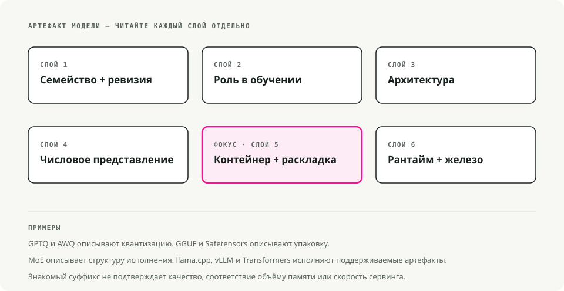
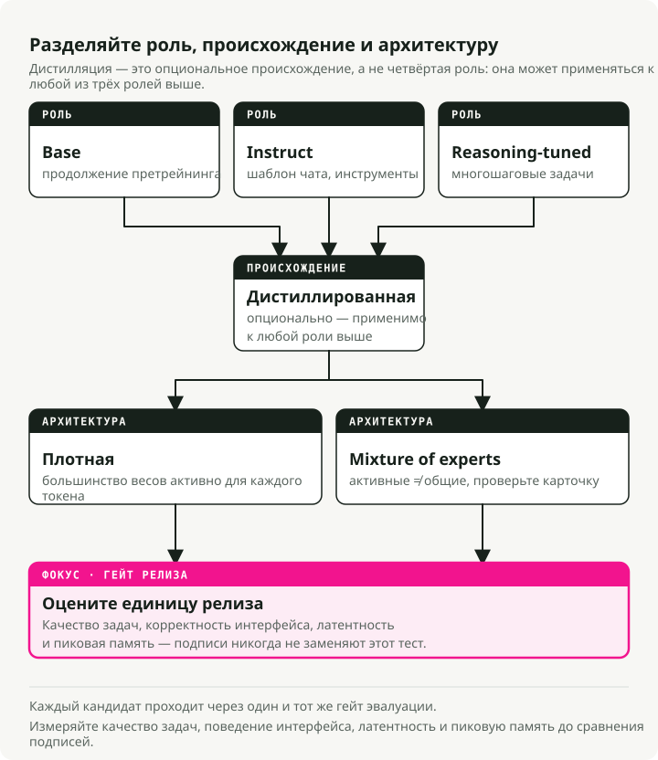
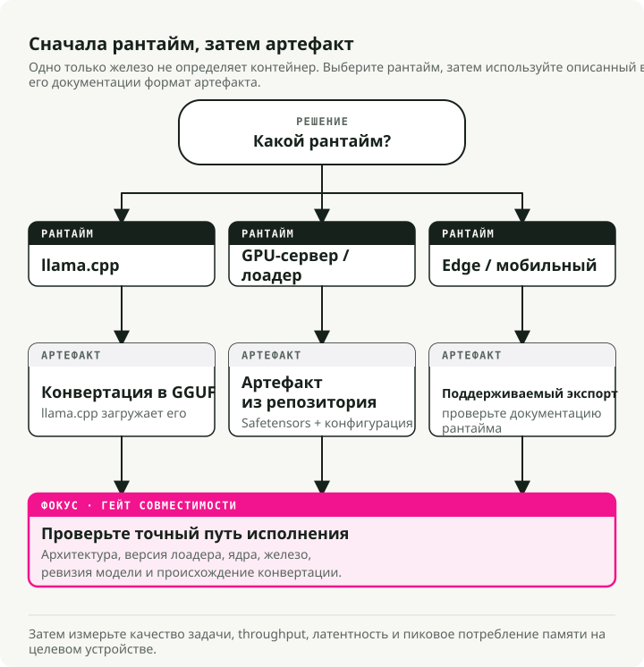
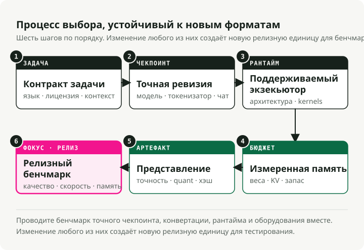

Автоматический перевод
Эта статья была автоматически переведена с оригинальной английской версии.
Варианты open-source LLM и форматы файлов: Instruct, GGUF, GPTQ, AWQ и MoE
Почему у open-source LLM так много запутанных названий?
Вы наверняка видели имена вроде Llama-3.1-8B-Instruct.Q4_K_M.gguf или Mistral-7B-v0.3-A3B.awq и задавались вопросом, зачем нужны эти суффиксы. Они выглядят как шум, но на самом деле одновременно сообщают две разные вещи.
Open-source LLM различаются по двум независимым измерениям:
- Вариант модели: суффикс в имени (
-Instruct,-Distill,-A3B) описывает, как модель обучалась и под что она оптимизирована. - Формат файла: расширение (
.gguf,.gptq,.awq) описывает, как хранятся веса и где они лучше всего запускаются (CPU, GPU, mobile).
Вариант определяет, что модель умеет делать. Формат определяет, где она может эффективно работать.

Если перепутать одно с другим, можно потратить вечер на разбор CUDA errors у модели, которая изначально не помещалась в вашу видеокарту.
Варианты моделей: что это значит (recipe)
Вариант говорит, через какой тип обучения прошли веса.
Base models
Сырая предобученная модель. Она выучила языковые паттерны на огромных текстовых корпусах, но ее не учили следовать инструкциям; все, что она делает, — предсказывает следующий токен.
Такую модель используют, если вы планируете дообучать ее на своих данных, занимаетесь исследованием и хотите получить «чистый» foundation, или если вам принципиально нужна модель без alignment training.
Компромисс в том, что она не будет надежно следовать инструкциям. Спросите ее «What is the capital of France?» — и она может ответить «and what is the capital of Germany?», потому что, с ее точки зрения, вы просто начали список вопросов.
Instruct / Chat models
Base model, которая прошла дополнительное обучение (Supervised Fine-Tuning плюс RLHF), поэтому умеет следовать человеческим инструкциям. Именно это большинство людей на самом деле имеют в виду, когда говорят, что им «нужна LLM».
Это правильный выбор для chatbots, agents и RAG. То же самое касается function calling, tool use и повседневной помощи в coding. Примерно 95% production-сценариев попадают именно сюда.
Цена — модель немного больше и медленнее, чем base model, из-за дополнительного обучения, а alignment может делать ее менее «креативной», потому что ее целенаправленно смещали в сторону предсказуемости и полезности.
Reasoning / CoT models
Более новый класс моделей вроде DeepSeek-R1 или производных от o1, обученных с Chain-of-Thought reinforcement learning. Они «думают» перед ответом: генерируют внутренние reasoning tokens, чтобы пройти через сложную логику, математику или coding-задачу, прежде чем выдать финальный ответ.
Они особенно хороши на сложных задачах по coding, debugging, математике и логических головоломках. Также они обычно меньше hallucinate, потому что перепроверяют собственную работу.
Но есть и минус — latency. Они порождают длинный поток «мыслительных» токенов, которые вы можете даже не видеть, но ждать все равно придется. Кроме того, для тривиальных запросов они могут быть излишне многословными.
Distilled models
Меньшая «student» model, обученная имитировать более крупную «teacher». Результат — сжатые знания: обычно 70–80% исходного качества при 30–50% размера.
Они хорошо подходят для mobile или edge devices, cost-sensitive SaaS, где важна каждая миллисекунда, и сервисов, которым нужно обслуживать много запросов.
Вы немного теряете в способности к сложным рассуждениям, но выигрыш в эффективности обычно того стоит.
MoE (Mixture-of-Experts): A3B, A22B и т. д.
Архитектура, в которой у модели много «expert» sub-networks, но для каждого токена активируется только часть из них. «A3B» означает, что на токен активны 3B parameters, хотя общий размер модели может быть 30B+.
Это полезно, если вам нужен интеллект большой модели на видеокарте с 12–24 GB VRAM без полной цены inference, или если вы запускаете модель локально и хотите максимальное качество на единицу памяти.
Минусы: больший размер на диске (все experts все равно нужно хранить), и не каждый inference framework пока поддерживает MoE routing. Проверяйте совместимость до того, как коммититься на загрузку 50 GB.

Правило большого пальца:
- По умолчанию выбирайте Instruct model. Именно это нужно большинству.
- Упираетесь в память или latency? Попробуйте Distilled или MoE variant.
- Решаете действительно сложную логическую задачу? Попробуйте Reasoning model.
Форматы файлов: что это такое (container)
Когда вы уже понимаете, какая модель вам нужна, остается выбрать, как она упакована. Формат в основном определяет, где модель может работать и сколько памяти ей нужно.
Quantization 101: зачем мы уменьшаем модели
Стандартные модели используют 16-bit числа (FP16) для каждого веса. Точно, но тяжело. Quantization снижает веса до 8-bit, 4-bit или даже 2-bit чисел.
- FP16: 2 bytes на parameter. Модель 13B — это ~26 GB.
- 4-bit: 0.5 bytes на parameter. Модель 13B — это ~6.5 GB.
Вы немного жертвуете «интеллектом» и сильно выигрываете в скорости и памяти.
GGUF (.gguf)
Наследник GGML и де-факто стандарт для локального inference сегодня. Один файл содержит веса, metadata и даже prompt template.
Это правильный выбор для Apple Silicon (M1-M4), где он работает нативно с Metal acceleration, и для машин без выделенного GPU. Экосистема инструментов тут тоже лучшая среди всех форматов: llama.cpp, Ollama и LM Studio напрямую работают с GGUF.
Один файл, запускается почти везде, и есть уровень quantization под любой бюджет памяти.
Как читать названия GGUF (Q3_K_M, Q5_K_M и т. д.)
Вы часто увидите длинный список файлов вроде Q3_K_M, Q4_K_S, Q5_K_M. Это не случайный набор символов; это семейство K-quant.
Разберем Q3_K_M:
Q3: в среднем 3-bit quantization для весов.K: используется схема K-quant (более новый метод с неравномерной точностью).M: средний размер блока, гдеS— маленький, аL— большой.
Что выбрать:
Q3_K_M: бюджетный вариант. Качество заметно падает, но он позволяет запускать более крупные модели на слабом железе.Q4_K_M: стандартный выбор. Лучший баланс скорости, размера и perplexity. Для большинства задач его не отличить от несжатых весов.Q5_K_M: премиальный вариант. Используйте его, если VRAM с запасом; качество очень близко к FP16 / Q8, при этом формат остается относительно компактным.
Практический совет: часто лучше запускать более крупную модель с более низкой quantization (Llama-70B на Q3), чем меньшую модель с высокой quantization (Llama-8B на Q8). Число параметров обычно дает больше интеллекта, чем точность представления.
GPTQ (.safetensors + config.json)
Post-training quantization, ориентированная на Nvidia GPU. Она использует second-order information, чтобы минимизировать потерю точности при сжатии весов.
Это правильный формат для production-серверов с CUDA на Linux и для high-throughput конфигураций в 4-bit. С загрузчиком ExLlamaV2 он работает очень быстро.
Но есть ограничение по железу: нужен GPU, и на CPU или Mac этот формат не работает эффективно.
AWQ (.safetensors)
Activation-Aware Weight Quantization. Этот метод смотрит, какие веса важнее всего во время inference, и сохраняет их точность, вместо того чтобы равномерно сжимать все веса.
Он обычно ближе к FP16 по качеству, чем GPTQ, при том же бюджете в 4-bit, и нативно поддерживается в vLLM. Если вам важно выжать максимум качества из 4-bit model, AWQ обычно побеждает.
PyTorch / Safetensors (FP16/BF16)
Веса полной точности, без quantization. Исходный формат, в котором выпускаются модели.
Это то, что нужно для cloud inference на серьезных GPU (A100, H100), для fine-tuning и continued training, а также для сценариев, где точность важнее памяти.
Цена очевидна: модель 70B в FP16 требует около 140 GB VRAM.

Совет: если сомневаетесь, начните с GGUF Q4_K_M. Он работает на GPU с 8 GB, современных CPU и почти на всем между ними. Оптимизировать можно потом, когда станет понятен реальный bottleneck.
Как это все запускать на практике (serving engines)
Чтобы загрузить модель и отвечать на запросы, нужен serving engine.
- Ollama работает с GGUF и запускается на Mac, Linux и Windows. Самый простой CLI tool для локальной разработки;
ollama run llama3— и готово. - LM Studio тоже использует GGUF и дает удобный GUI на Mac и Windows. Хороший вариант, чтобы визуально просматривать модели до того, как делать выбор.
- vLLM — production-стандарт. Он загружает AWQ, GPTQ и FP16 safetensors и рассчитан на high-performance servers и Docker deployments. Поддержка GGUF пока остается неровной.
- llama.cpp — engine, который лежит под Ollama. Используйте его напрямую, когда нужна низкоуровневая интеграция или когда target-платформа маленькая (Raspberry Pi, Android, embedded).
Собираем все вместе: фреймворк для выбора
Вот практический flowchart. Начните со своих ограничений (железо и use case), а затем выберите вариант и формат, которые подходят.

Быстрые рекомендации по сценариям
Собираете chatbot на MacBook Pro (16 GB RAM). Используйте Instruct model вроде Llama-3-8B или Mistral-7B в GGUF Q4_K_M. Она будет работать плавно на CPU и Metal, поместится в память, и вам придется иметь дело только с одним файлом.
RAG-система на сервере с RTX 4090 (24 GB VRAM). Используйте Instruct или MoE (Mixtral 8x7B, Qwen-14B) в EXL2 (через ExLlamaV2) или AWQ 4-bit. Именно так можно реально выжать пользу из 24 GB; EXL2 очень быстрый на Nvidia cards.
Fine-tuning под доменную задачу на cloud GPU. Используйте Base model в FP16 safetensors. Для обучения нужна полная точность, а старт с невыравненной base model позволяет не бороться с alignment во время fine-tuning.
High-throughput API при ограничениях по стоимости. Используйте Distilled model (DeepSeek-Distill или аналог) в AWQ 4-bit на vLLM. Throughput-per-dollar тут очень трудно превзойти.
Частые ошибки и заблуждения
«Все 4-bit модели одинаковы по качеству»
Нет. QAT 4-bit model (обученная сразу в 4-bit) часто превосходит 8-bit post-training quantized model. Метод так же важен, как и число бит, а AWQ обычно сохраняет точность лучше, чем наивный GPTQ.
«MoE models работают с любым inference engine»
Пока нет. llama.cpp хорошо справляется с MoE routing, но поддержка в других engines различается. Всегда проверяйте это до загрузки 50 GB MoE model.
«Distilled models — это просто уменьшенные версии того же самого»
Именно здесь многие ошибаются. Distilled 7B может быть лучше обычной 13B, потому что училась у гораздо более крупного teacher (часто 70B+). Это сжатые знания, а не просто сжатые параметры.
«Нужно дополнительно квантизовать мою QAT model, чтобы сэкономить место»
Не стоит. QAT models уже обучались в low-bit precision. Дополнительная quantization поверх этого обычно сильно ухудшает качество. Используйте их как есть.
«Чем больше, тем всегда лучше»
Часто да, но не всегда. Хорошо настроенная 8B Instruct model может обойти плохо aligned 70B base на конкретной задаче. Сначала подберите variant под use case, а уже потом гонитесь за количеством параметров.
TL;DR - просто скажите, что скачать
Если вам просто нужно что-то рабочее:
- Скачайте файл
<model-name>-Instruct.Q4_K_M.ggufс Hugging Face.- Запустите его через Ollama или LM Studio.
- Если слишком медленно — попробуйте меньшую модель или Distilled variant.
- Если не хватает памяти — переходите на quantization Q3_K_M.
- Если качества недостаточно — поднимайтесь до Q5_K_M или выбирайте более крупную модель.
Начните с простого и оптимизируйте только тогда, когда это действительно нужно. Значения по умолчанию работают примерно в 90% случаев.